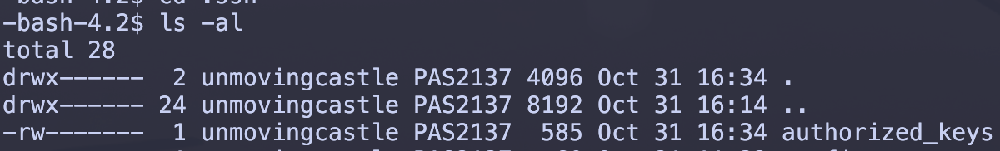

Edit your ssh configuration file. Go to the ssh folder by
cd~/.ssh/
and then use your favorite editor to edit the config file. For instance,
with vim, you can vim~/.ssh/config.
Type the following into the terminal to generate an rsa-type ssh key:
ssh-keygen-trsa
Hit enter to store the key to the default location and again to
use the default passphrase (ie. no passphrase).
Check that you have a key-pair generated by typing ls~/.ssh.
The id_rsa.pub is the public key that is to be sent and store on OSC.
Type the following command to send the key to OSC:
Log into OSC (We will refer to this as server side form now on).
Check your server-side home directory also has an .ssh folder.
(Use the ls-al|grepssh command to list all files in long format;
the grep command picks out the lines that contain ssh)
Make sure that .ssh is only accessible by you.
If not, change its mode by
chmod700.ssh
cd into the ssh folder, type ls-l to list all files in long format.
Make sure you are the only one that can write the files.
You should see something like this:

Run the following command to see what’s inside the authorized_keys file.
catauthorized_keys
This should spit out your public key.
Check that the server side public key matches the local public key.
If not, re-run the ssh-copy-id command in the previous section, or use
whatever means you can think of the get the public key from your local
computer into OSC’s authorized_keys file.
Replace YOUR_USERNAME with your OSC username and YOUR_PASSWORD with
your OSC password.
Warning
Do make sure to keep the \r (after YOUR_PASSWORD).
Alternatively, it could be a \n (newline character).
regarding the expected
The assword: is intentional and not a typo, since what we are expecting
could technically be Password or password. See 1.
At this point, you want to make sure you are the only person that is
authorized to execute this script.
Exit the text editor and in the terminal, change access to file using
chmod700osc
You can set an alias in your .bashrc (or .zshrc) to execute this script,
or you could place it in a directory where your computer automatically
looks. For instance, on my mac, the path of this file is at
/usr/local/bin/osc
And now whenever I type osc, I ssh into OSC without having to type my
password!